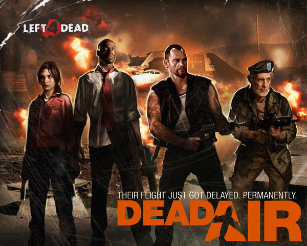
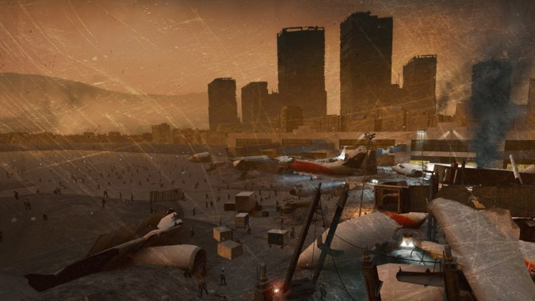

Los sobrevivientes originales: Bill, Zoe, Frances y Lewis deberan sobrevivir hasta la llegada al aeropuerto y poder escapar en busca de refugio. La campaña "Dead Air" comienza con los cuatro sobrevivientes escapando de un invernadero infestado de zombis, empezando su camino al aeropuerto más cercano con la esperanza de encontrar una manera de escapar en un avión de rescate.

Los sobrevivientes reciben una llamada por radio con información sobre un avión que puede sacarlos de la ciudad u deciden seguir adelante a pesar de las hordas de zombis que atacan las calles y los tejados de los edificios. A medida que avanzan los sobrevivientes se encuentran con edificios abandonados y calles desierticas.
El grupo se infiltra en el distrito comercial utilizando tiendas y almacenes como refugios temporales. Después de llegar a un hotel cerca del aeropuerto, los sobrevivientes se dan cuenta que los hoteles están contaminados como las calles. Escapar del hotel es un viaje dificíl dado a los infectados especiales junto al tamaño de las habitaciones. En el aeropuerto se dan cuenta que esta lleno de aviones abandonados.
Los aviones que pudieron fungir como metodo de escape ahora son un obstáculo para su supervivencia. En la terminal del aeropuerto los sobrevivientes deben recorrer los pasillos infectados antes de llegar a la pista de aterrizaje. Ya llegados a la pista de aterrizaje se encontraron al avión de la llamada. Tuvieron que luchar contra una gran horda de zombies mientras el avión se repostaba de gasolina para despegar, finalizando la campaña nuevamente con un escape de los sobrevivientes.
